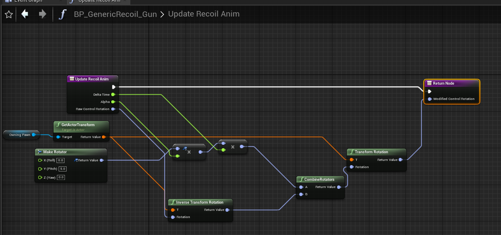
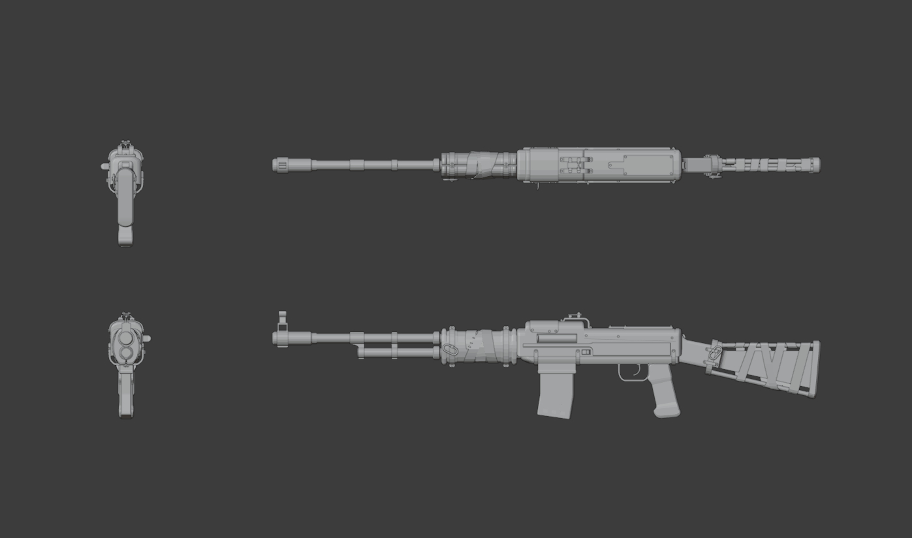
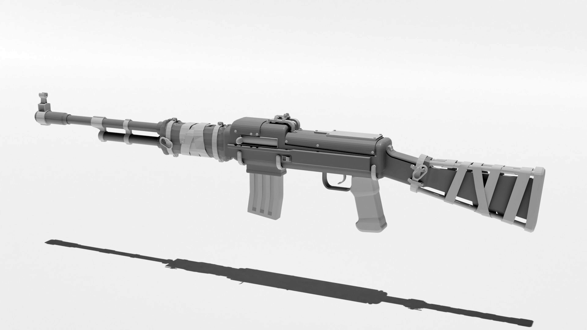
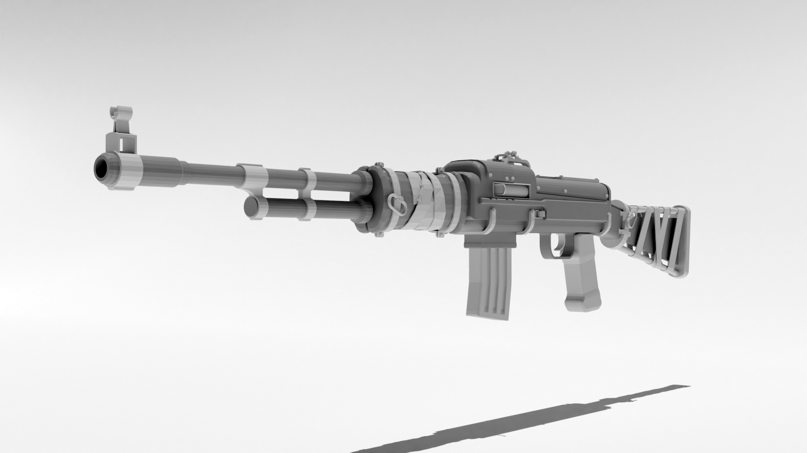
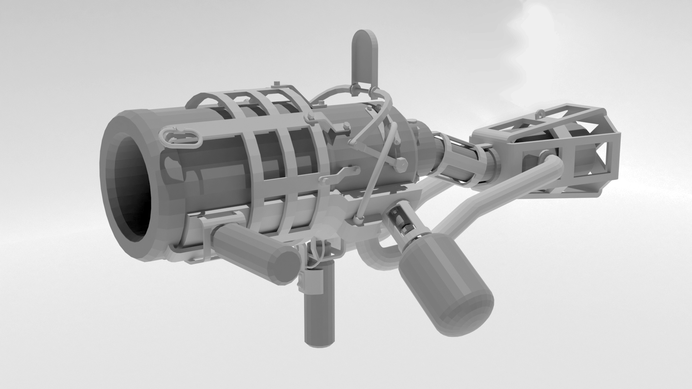
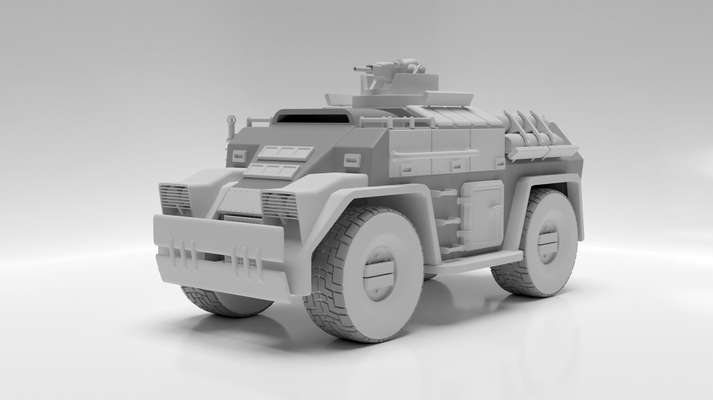
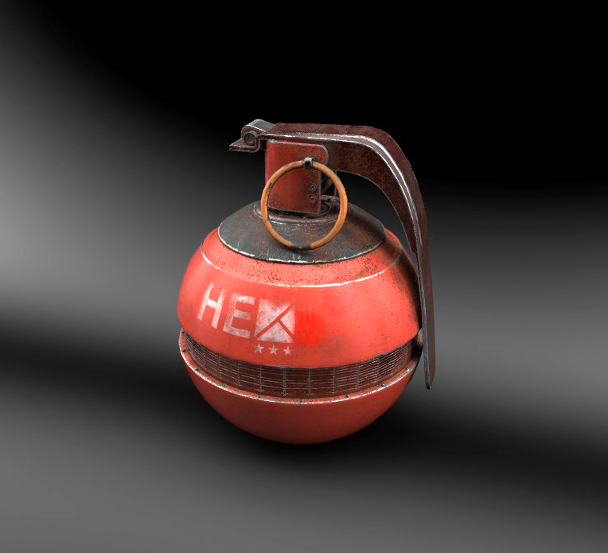

Empires UE4 Monthly Update - August 2020
Project Update - Roy Awesome
Hey Everyone
This month I have the absolute pleasure to announce that we have completed the first development milestone for the Empires UE4 project. This milestone completion is a major achievement for this team, and is now the furthest any Empires remake has ever gotten in nearly 15 years. While we have quite a ways to go until this project is playable and fun, I am very proud of this team and the progress they have made in these last 3 short months.
To Recap, here is our development roadmap:
Milestone 1 (Minimum Viable Product) (DONE)
- Players can join into a game server and shoot other players. They are assigned into two teams, and have rudimentary spawn point selection. They are able to communicate to each other and see their scores on a scoreboard. At least one class is implemented for each team, with one gun, one secondary, and one grenade. Players should be able to communicate to each other via text chat
Milestone 2 (Infantry Combat Prototype) (We are here)
- Players are able to be placed into squads, and all the classes are created. Players can select a spawn point (although the spawns can be manually placed at this point). Many of the easy skills, utilities, and grenades are created. Players can sprint and crouch. Players can interact with ammo containers to get ammo. Teams have tickets, and when a team hits 0 tickets, the game ends.
Milestone 3 (Vehicle Prototype)
- Temporary: Players are able to place buildings. All skills and abilities are implemented. Rudimentary Vehicles are implemented, but without turrets and skills. Capturable Objectives are placed in levels. A map such as Emp_Escort or Emp_Glycencity is playable from start to finish. Barracks, Armory, and Vehicle Factory are functional. Players should be able to speak to each other via VOIP.
Milestone 4 (Commander Prototype)
- All vehicles are implemented, although their loadouts can be fixed. Command Vehicle is implemented and a player can go into RTS mode and place buildings. Resources exist and are functional. Squads have squad abilities and squad scoring. Repair Station, Radar, and Refinery are functional. A classic empires game can be played.
Milestone 5 (Empires Classic)
- Common sourcemod plugin “Parachutes” should be implemented (and optional). All Empires maps should either be imported or remastered. You can swim in Water. Empires Community Members should regard the game as feature complete as the source engine mod at this point.
So, as you can see, we have a bit to go but we’ve made some serious progress!
Now, some of you may think that because it took us about 3 months to build out the first milestone, it may take us another 3 months for the next one and so on and so on. A simple extrapolation will have this game done sometime next year. I’m not ruling that out (we are an all volunteer team with day jobs after all), however I do foresee Milestone 2 going much quicker than the first one. Quite a bit of the time taken in the first milestone was spent making sure that we were on a solid foundation with our game code. We have an extremely good pipeline now that allows us to create new content rapidly, we have a solid art pipeline that lets us make use of art assets, and we have a lot of the hard stuff done and out of the way at this point. For example, it took us 3 weeks just to get Steam Dedicated Servers working. I don’t see anything like that popping up at all in Milestone 2, so it should come together much faster.
Editor’s Note: Apologies for the late posting of this update. Due to the nature of this being a volunteer project, posting this update was delayed due to a major work deadline, and then my state literally caught fire.
Sound and Music
Hi all - KGBEATS here.
I unfortunately did not get a chance to make progress on the music front this month, and it could be that way for a bit. Stuff with my employment has taken center focus, which leaves little time for side projects such as this. I see this as only a temporary setback however, and hope to get back on the wagon of composing/producing when that aspect of my life is more solidified.
The entire team is working INSANELY hard to deliver a great product, however. You should check out and give praise for their contributions, they are most deserving!
Programming
Gameplay Programming update - RoyAwesome
August was extremely productive! We basically have a game now, just need to add features.
I spent quite a bit of time trying to integrate art and animations into the game. This is generally an unglamorous part of game development, but it’s extremely important to create a good pipeline so that artists, animators, and gameplay designers can take assets they create and get them into the game and work with gameplay events (like shooting, reloading, etc). This month, I sat down and completely integrated these systems into a nice and easy way to script up things like attaching weapons to parts of the player’s body, animating weapon swaps, reloads, and the like. All of these things work with First Person (what you see), and Third Person (what you see for others). They are all extremely simple to set up, so adding new art and animations for different weapons should be a breeze and not require programmers to get these things set up.
Once I got the art pipeline figured out, I changed tack and finished out the Text Chat system. Twusty did a good job early on in the project creating a system to route text messages to different players, and I made a pass on it to generalize it and create scriptable rules for how chat messages should reach other players. I also generalized the rules system to allow the routing of any message data, and expanded it to work with a scriptable “Toast” system. This will be used to split out game events from Chat, such as “You have been Promoted” toasts and kill notifications, similar to modern shooters. Even with placeholder art, these kill notifications looked and felt really good and were a great improvement to the experience. I also spent some time stubbing out a generic routing system to work with Voice Chat, so we can also script who can send and who receives voice chat data. While the plan is to have Team VOIP, we can easily experiment with local voip, squad voip, or whatever we want to see.
Chat, showing off the different “channels” that can be created using the chat system. This shows off Team Chat and All Chat.
Kill Toasts. When you kill another player, you get a notification that you’ve killed them
While I was testing different things out, I noticed how hard it was to tell if you were dealing or taking damage, so I spent an evening creating Damage Notifications. These are extremely straightforward, but really make the game feel good. When you shoot a player, you get a small “X” in the center of your screen and you hear a small “beep” sound, indicating that you’ve dealt damage. When you take damage, there is a red bar that flashes on your screen, indicating which direction you took damage from. It’s all super simple right now, but it really made the game feel better and more responsive.
Damage Notifications. The main screen shows the person taking damage and the smaller one shows the X when dealing damage.
Finally, I constructed a generic Recoil system. While Source-Empires doesn’t have recoil for many guns, HMGs have extremely high recoil when standing, forcing users to crouch or prone when using them. However, as most games these days do have recoil for every gun, I wanted to create a generic recoil system that can do both the extremely high HMG recoil or subtle, controllable recoil that modern shooters have. So, to that end, I created a concept of a “Recoil Animation”, which is a scriptable recoil object that is added to the player when a recoil event happens. It blends in and out, and moves the player’s control rotation to simulate recoil movement. Each recoil animation can take a payload of data from the recoil event generator, allowing us to script a number of stats that control things like recoil direction, intensity, and how it recovers. While recoil recovery currently isn’t created (ie, without compensating for recoil it returns to the center), I plan on creating a recoil model that does do recovery, but if you move your mouse to compensate for recoil, it will stop.
Simple example recoil. The gun will punch up when shooting. This is all scriptable and configurable, allowing designers to create any recoil model they want

Snapshot of scriptable recoil. By using simple blueprint code, we can do all sorts of mechanics with recoil.
While this system will be certainly used for HMGs, I would be interested to hear what people think about adding recoil to every gun. Are there current shooters you think do recoil well? Could recoil help balance Snipers and Rifles? Hop on the Empires discord and feel free to discuss! There are a lot of opinions on this topic, and since we now have a scriptable recoil system there are a lot of directions we can go with it.
Grenades - Megafunk
Hello, I’m Megafunk and I am new to Empires. I joined this project to improve my UE4 skills and I am currently focussing on grenades. So far I have implemented simple grenades that are thrown and deal damage.
Art
NF Soldier reskin - f1r3w4rr10r
After reskinning the BE soldier I also went along and skinned the NF soldier as well.
A NF soldier in a crouch walk animation loop
This gives us at least two distinguishable characters for now to do some more testing with.
NF Concept Art - Mayama
Hi I’m Mayama, if you have been playing Empires for a long time you might remember my name. I recently joined the team and my main focus is getting a consistent design and visual style going for the empires factions. Right now i’m doing some concept Art for NF infantry weapons because it’s an easy place to start getting a feel for the style. After all weapons in a fps shooter are an extension of the player into the game world and need more attention than the rest of the art.Keep in mind that all pictures shown here are work in progress and will most likely not resemble anything that you will see in the finished game.

3d concept for a NF Assault Rifle

3d concept for a NF Assault Rifle

3d concept for a NF Assault Rifle

3d concept for a hand held NF Mortar

3d concept for a hand held NF Mortar

3d concept for a NF APC

Render of a NF Frag Grenade